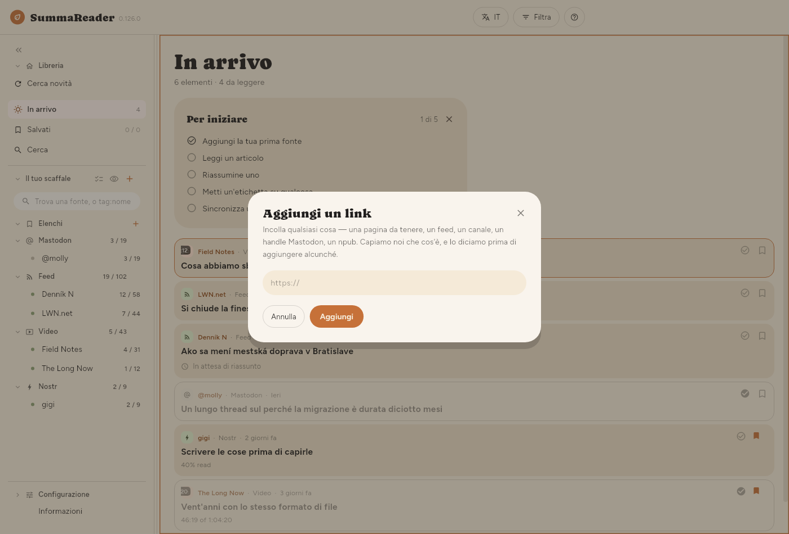

← Primi passi · Indice · La finestra →
Per cominciare
Aggiungere la prima fonte
SummaReader è vuoto finché non gli dici che cosa seguire. Premi + accanto a Il tuo scaffale e incolla un indirizzo in Aggiungi un link.

Puoi incollare uno qualsiasi di questi e succede la cosa giusta:
| Incolli | Diventa |
|---|---|
L’indirizzo di un feed (…/feed.xml, …/rss, feeds.…) | Un feed |
| La home page di un sito | Un feed, se la pagina ne segnala uno |
| L’indirizzo di un canale o di un video YouTube | Quel canale |
Un account Mastodon (@nome@server) | I post di quell’account |
Un profilo Nostr (npub1… o nprofile1…) | Le note e gli articoli di quell’autore |
Un canale Telegram pubblico (t.me/nome) | I post di quel canale |
| Qualsiasi altra pagina | La pagina stessa, conservata una volta |
Un autore Nostr viene letto dai relay su cui pubblica. Ogni post viene verificato con la firma dell’autore. Un canale Telegram deve essere pubblico: l’app legge la sua pagina web su t.me/s/nome. Un canale privato o un gruppo viene rifiutato. Un semplice @nome è un account Mastodon, non un canale Telegram.
Per trovare i relay di un autore, l’app chiede prima a quattro relay predefiniti il suo elenco di relay e il suo profilo. Legge da loro anche i post quando un autore non pubblica alcun elenco. Per usare altri relay, per esempio uno tuo, cambia l’elenco in Configurazione › Base › Scaricamento › Relay Nostr. Ogni indirizzo deve iniziare con wss://. La sezione appare solo quando segui un autore Nostr.
Quando una pagina segnala anche un feed, la finestra offre entrambi: il feed continua a portare contenuti, la pagina stessa viene conservata una volta e basta.
Un feed di podcast si segue come qualsiasi altro feed. Quando un episodio rimanda a una trascrizione, SummaReader legge e riassume la trascrizione invece della pagina dell’episodio.
Importare ciò che segui già
Se arrivi da un altro lettore, Configurazione › Avanzate › I tuoi dati › Importazione › Importa da un file accetta un file OPML. Tutto ciò che contiene arriva come fonte.
Che cosa succede al primo controllo
La prima lettura di un feed porta l’archivio che il feed offre in quel momento: quindici video, trenta articoli. Niente di tutto ciò è nuovo per te, quindi niente viene riassunto automaticamente. Lo è solo ciò che viene pubblicato dopo l’iscrizione.
Tutto ciò che è più vecchio si può comunque riassumere quando vuoi: aprilo e premi Riassumi, oppure usa il pulsante per più articoli descritto in Riassunti.